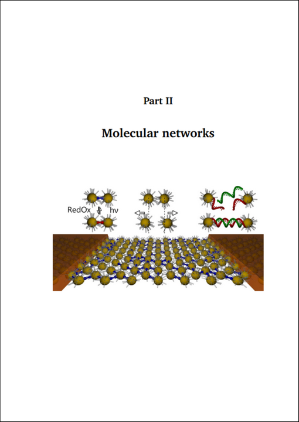
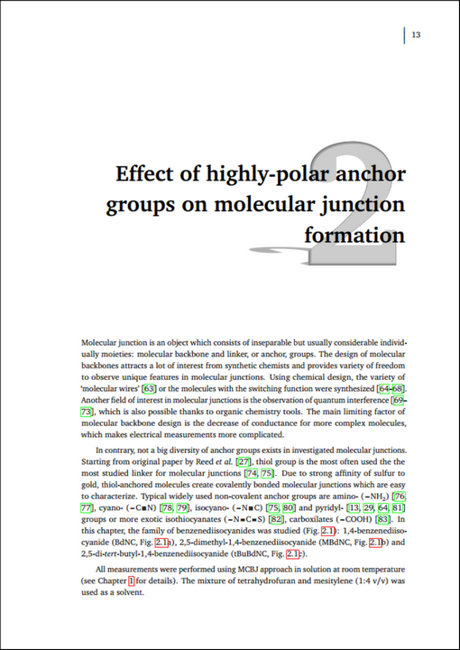
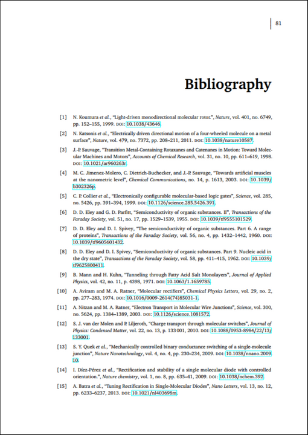
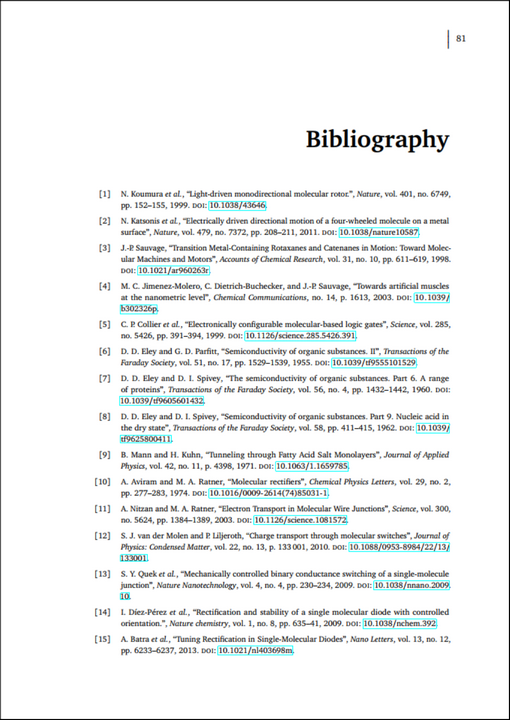
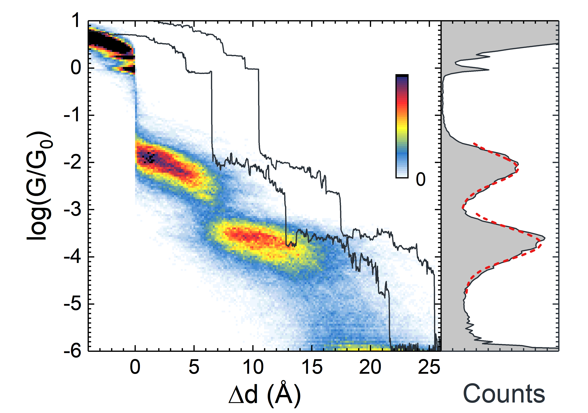
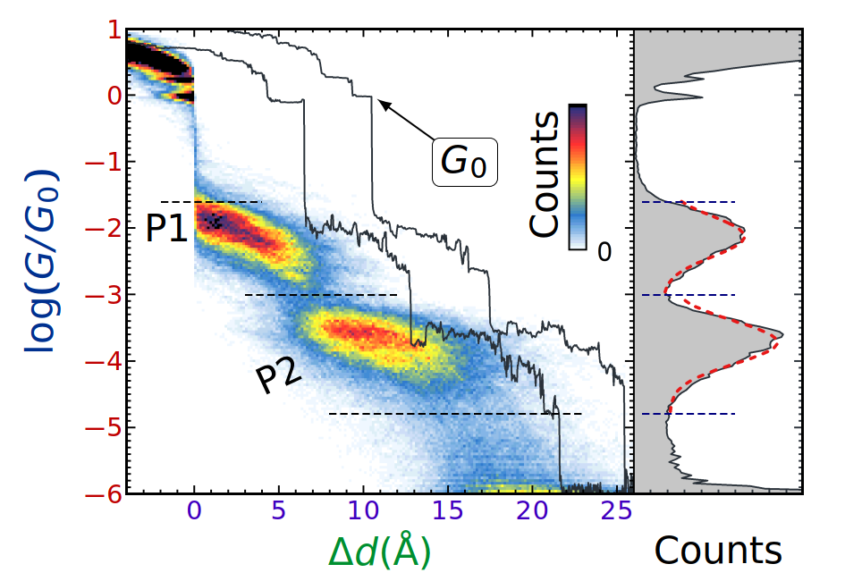

Anton Vladyka, PhD
LaTeX as the best tool for scientific publishing
For own purposes I did not use `modern` packages like cleanthesis or even KOMA. Instead I prepared my own header. Key points:
- Chapter page styling
- Headers with page numbers on the margin
- Margin chapter numbers
- Reduced font size in bibliography, table and figure captions etc.
% PAGE DIMENSIONS
% FOR 17x24cm
\usepackage[inner=30mm, outer=20mm,top=24mm,headsep=10mm,bottom=20mm,paperwidth=170mm,paperheight=240mm]{geometry}
% TABLES: full-width using X{10cm} column
\usepackage{tabularx}
% DRAWINGS (for chapter title)
\usepackage{tikz}
% TYPOGRAPHY:
\usepackage[protrusion=true,final,factor=1500]{microtype}
% SOME extra math symbols
\usepackage{amssymb}
% TEXT on top of pictures
% ABS or REL positioning
% REL is better for scaled figures
\usepackage[rel]{overpic}
% CHEMICAL formulae like \ce{SiO2} and \ce{(NH4)2S2O8}
\usepackage[version=4]{mhchem}
% UNITS
\usepackage{siunitx}
% DEFine new units
\DeclareSIUnit{\molar}{M}
\DeclareSIUnit{\GO}{\ensuremath{\text{G}_0}}
\DeclareSIUnit{\decade}{\ensuremath{\text{dec}}}
\DeclareSIUnit{\torr}{\ensuremath{\text{Torr}}}
% SPEcify delimiters
\sisetup{exponent-product =\cdot}
\sisetup{inter-unit-product = \cdot}
\sisetup{per-mode=symbol} % PER = /, not power -1
% CAPTIONS of figures/table styling
\usepackage[font={stretch=1.1,small},labelfont=bf]{caption} % order matters: stretch, then size
%\usepackage[font={small,sf},labelfont=bf]{caption} % small sans-serif + bold
% FONT SIZES
\usepackage{fix-cm} % FOR ANY font sizes, not predefined
\renewcommand\footnotesize{\fontsize{7pt}{7pt}\selectfont}
\renewcommand\small{\fontsize{8pt}{8pt}\selectfont}
\renewcommand\normalsize{\fontsize{9pt}{9pt}\selectfont}
\renewcommand\large{\fontsize{10pt}{10pt}\selectfont}
\renewcommand\Large{\fontsize{11pt}{11pt}\selectfont}
\renewcommand\Huge{\fontsize{24pt}{24pt}\selectfont}
%\renewcommand\small{\fontsize{10pt}{10pt}\selectfont}
%\renewcommand\normalsize{\fontsize{12pt}{12pt}\selectfont}
%\renewcommand\large{\fontsize{14pt}{14pt}\selectfont}
%\renewcommand\Large{\fontsize{16pt}{16pt}\selectfont}
%\renewcommand\Huge{\fontsize{36pt}{36pt}\selectfont}
% LINE spacing
\renewcommand{\baselinestretch}{1.25}
\renewcommand{\baselinestretch}{1.35}
% FONTS for LaTeX/XeLaTeX
\usepackage{ifxetex}
\ifxetex
\usepackage{mathspec}
\usepackage{polyglossia}
\setdefaultlanguage[variant=uk]{english}
\defaultfontfeatures{Ligatures=TeX} % To support LaTeX quoting style
\setmainfont{Minion Pro}
\setsansfont{Myriad Pro}
\setmathsfont(Digits,Greek,Latin)[Numbers={Proportional}]{Minion Pro}
\setmathrm{Minion Pro}
\usepackage[italic]{mathastext}
%\setmainfont[BoldFont={SwiftNeueLTW01-Bold},ItalicFont={SwiftNeueLTW01-Italic}]{SwiftNeueLTW01}
%\setsansfont{UniversLTW01-55Roman}
\else
%\usepackage[T1]{fontenc}
\usepackage[utf8]{inputenc}
\usepackage[english]{babel}
%\usepackage{fouriernc} % UTOPIA + FOURIER
%\usepackage{mathpple} % palatino
%\usepackage[sc]{mathpazo}
\usepackage[charter]{mathdesign} %utopia, garamond
\usepackage[scaled]{helvet}
%\usepackage[light]{roboto}
%\renewcommand{\sfdefault}{ua1}
\fi
% HEADER/FOOTER
\usepackage{fancyhdr}
\renewcommand{\headrulewidth}{0pt}
\renewcommand{\footrulewidth}{0pt}
\fancyhf{}
% REDEFINE Plain as empty: for PART page
\makeatletter
\let\ps@plain\ps@empty
\makeatother
% PLAIN: for first page of chapter
\fancypagestyle{plain}{
\renewcommand{\headrulewidth}{0pt}
\fancyhf{}
\fancyhead[RO]{
\makebox[2cm][l]{
\makebox[4cm][c]{\normalsize
\hskip0.25em\phantom{\thepage}\phantom{XX}~~$\left|\vphantom{\int_a^b}\right.$~~\thepage\phantom{XX}
}
}
}
\fancyhead[LE]{
\makebox[2cm][r]{
\makebox[4cm][c]{\normalsize
\hskip0.45em\phantom{XX}\thepage~~$\left|\vphantom{\int_a^b}\right.$~~\phantom{XX}\phantom{\thepage}
}
}
}
}
% REGULAR pages
\fancyhead[RO]{
\makebox[2cm][l]{
\makebox[4cm][c]{\normalsize
\hskip0.25em\phantom{\thepage}\nouppercase\rightmark~~$\left|\vphantom{\int_a^b}\right.$~~\thepage\phantom{\nouppercase\rightmark}
}
}
}
\fancyhead[LE]{
\makebox[2cm][r]{
\makebox[4cm][c]{\normalsize
\hskip0.45em\phantom{\nouppercase\leftmark}\thepage~~$\left|\vphantom{\int_a^b}\right.$~~\nouppercase\leftmark\phantom{\thepage}
}
}
}
\makeatletter
% MARGIN labels, except chapter=0 (intro; conclusion; bibliography etc.)
% AND \setcouter{chapter}{0} has to be set explicitely in required chapters
\fancyfoot[RO]{
\ifnum\value{chapter}>0
\begin{tikzpicture}[remember picture, overlay]
\node[rounded corners=2mm,inner sep=3mm,anchor=north east,black,fill=black!15,draw=black!75] at ([xshift=2mm,yshift=-\arabic{chapter}*1.3cm-1.1cm]current page.north east) {\fontsize{1cm}{1cm}\selectfont\thechapter};
\end{tikzpicture}
\fi
}
\fancyfoot[LE]{
\ifnum\value{chapter}>0
\begin{tikzpicture}[remember picture, overlay]
\node[rounded corners=2mm,inner sep=3mm,anchor=north west,black,fill=black!15,draw=black!75] at ([xshift=-2mm,yshift=-\arabic{chapter}*1.3cm-1.1cm]current page.north west) {\fontsize{1cm}{1cm}\selectfont\thechapter};
\end{tikzpicture}
\fi
}
% PART page empty without footer and header
% USUally it is 'empty', but since we redefine empty,...
\renewcommand\part{%
\if@openright
\cleardoublepage
\else
\cleardoublepage
%\clearpage
\fi
\thispagestyle{empty}%
\if@twocolumn
\onecolumn
\@tempswatrue
\else
\@tempswafalse
\fi
\null\vfil
\secdef\@part\@spart}
\makeatother
\pagestyle{fancy}
% HEADER contents - chapter name and section name
%\renewcommand{\chaptermark}[1]{\markboth{\thechapter.\, #1}{}}
\renewcommand{\chaptermark}[1]{\markboth{#1}{}}
\renewcommand{\sectionmark}[1]{\markright{\thesection.\, #1}}
% FLOATING objects
\usepackage{float}
% PICTURES
\usepackage{graphicx}
% NOT USED
\usepackage{setspace}
% SPACINGS in lists
\usepackage{enumitem}
% VERICAL: topsep partopsep parsep itemsep
% HORIZONTAL: leftmargin rightmargin listparindent labelwidth labelsep itemindent
% GLOBAL: \setlist[enumerate]{labelsep=*, leftmargin=1.5pc}
\setlist{noitemsep}
%\setlist{nosep}
% BIBLATEX
% BIBliography: if authors <= MAXBIBNAMES - show all, ELSE: show only MINBIBNAMES et al.
% TEXTCITE: if authors <= MAXCITENAMES - show all, ELSE: show only MINCITENAMES et al.
% SORTCITES = sort numbers in ascending order
% IGNORE/NOT IGNORE URL, DOI, EPRINT fields
% BIBstyle = ieee (available)/ nature / science etc. (requires *.bbx file)
% NICE: ieee+doi=true and phys+doi=false
\usepackage[maxbibnames=3,minbibnames=1,backend=bibtex,maxcitenames=2,mincitenames=1,bibstyle=ieee,citestyle=numeric-comp,sorting=none,sortcites,url=false,doi=true,eprint=false]{biblatex}
% REDUCE font size for bibliography (=useless waste of space)
%\renewcommand*{\bibfont}{\footnotesize} %too small
\renewcommand*{\bibfont}{\small}
% SUPPRESS 'in' nefore journal name
\renewbibmacro{in:}{}
% LIST of bib files
\addbibresource{library.bib}
\addbibresource{theses.bib}
\addbibresource{weblinks.bib}
% STYLE of URL/DOI: Serif font instead of monospaced (mono looks ugly)
\urlstyle{rm}
% REdefine fullcite for personal publications list
\DeclareCiteCommand{\fullcite}
{\usebibmacro{prenote}}
{\usedriver
{\defcounter{minnames}{6}%
\defcounter{maxnames}{9}}
{\thefield{entrytype}}.}
{\multicitedelim}
{\usebibmacro{postnote}}
% FOOTnote on the chapter first page without footnotemark
% RESULTS of this chapter were published as a paper
\makeatletter
\def\blfootnote{\gdef\@thefnmark{}\@footnotetext}
\makeatother
% TABLES: nicer rulers
% AND nicer spacing between lines in tables
\usepackage{booktabs}
\renewcommand{\arraystretch}{1.2}
\hyphenation{con-duc-tance con-duc-tance-dis-place-ment}
% TITLES styling
\usepackage[toctitles,explicit,raggedright]{titlesec}
\newcommand*\chapterlabel{}
% CHAPTER in frontmatter|backmatter
\titleformat{name=\chapter,numberless}[display]
{\normalfont\rmfamily\Huge\bfseries}{}{1ex}
{\flushright{\chapterlabel#1}}
% CHAPTER in mainmatter
\titleformat{\chapter}
{\gdef\chapterlabel{}\normalfont\rmfamily\Huge\bfseries}
{\gdef\chapterlabel{}}{-10em}
{
\flushright{
\begin{tikzpicture}
%\draw[help lines,step=5mm] (0,-3) grid (-\linewidth,3);
\node[black!50,anchor=east,inner sep=0mm] (a) at (0,0) {\fontsize{7cm}{8cm}\selectfont\thechapter};
\begin{scope}[cm={1,0,-0.6,0.15,(0,0)}].
\node[transform shape,black!30,anchor=south,inner sep=0mm] at (a.south) {\fontsize{7cm}{8cm}\selectfont{}\thechapter};
%\node[transform shape,black!30,anchor=south east,inner sep=0mm] at (a.south) {\fontsize{3cm}{8cm}\selectfont{}\chaptername};
\end{scope}
\node[black!50,anchor=east,inner sep=0mm] (a) at (0,0) {\fontsize{7cm}{8cm}\selectfont\thechapter};
\node[black!35,anchor=east,inner sep=0.20mm,scale=0.98] at (0,0) {\fontsize{7cm}{8cm}\selectfont\thechapter};
\node[black!20,anchor=east,inner sep=0.40mm,scale=0.96] at (0,0) {\fontsize{7cm}{8cm}\selectfont\thechapter};
%\node[black!20,scale=0.97] at (a) {\fontsize{6cm}{8cm}\selectfont\thechapter};
%\node[anchor=east,black!45] at (0,-1) {\resizebox{\linewidth}{!}{\chaptername}};
%\node[anchor=north east,inner sep=0mm] at (a.north east) {\parbox{\linewidth}{\raggedleft\chapterlabel#1}};
\node[anchor=east,inner sep=0mm] at (0,0) {\parbox{\linewidth}{\raggedleft\chapterlabel#1}};
\end{tikzpicture}
%\chapterlabel#1
}
}
% SPACING: chapter by default uses \@makechapterhead with extra spacing before and after the chapter title
\titlespacing*{\chapter}{0pt}{-25pt}{30pt}
\titleformat{\section}[block]{\Large}{\bfseries\thesection.\,\,#1}{1em}{}
\titleformat{\subsection}[block]{\large}{\bfseries\thesubsection.\,\,#1}{1em}{}
%\titleformat{\subsection}{\no}{\itshape\thesubsection.\,#1}{1em}{}
% GREEK letters in section/chapter titles AND in PDF bookmarks
%\usepackage[artemisia]{textgreek}
% PART page picture
% DEFINE \partimage before the beginning of the part
\makeatletter
\newcommand{\partimage}[2][]{\gdef\@partimage{\includegraphics[#1]{#2}}}
% REDEFINED amsbook part code to include the \@partimage insertion command - copypaste from SeX
\def\@part[#1]#2{%
\ifnum \c@secnumdepth >-2\relax \refstepcounter{part}%
\addcontentsline{toc}{part}{\partname\ \thepart.
\protect\enspace\protect\noindent#1}%
\else
\addcontentsline{toc}{part}{#1}\fi
\begingroup\centering
\ifnum \c@secnumdepth >-2\relax
{\fontsize{\@xviipt}{22}\bfseries
\partname\ \thepart} \vskip 20\p@ \fi
\fontsize{\@xxpt}{25}\bfseries
#1\vfil\@partimage\vfil\endgroup \newpage\thispagestyle{empty}}
\makeatother
% HYPERLINKS for pdf + pdfinfo
% MUST be loaded last for correct links in the bookmarks
\usepackage[unicode,pdfencoding=auto]{hyperref}
% TO provide proper hierarchy of bookmarks like top-level after the Part
\usepackage{bookmark}
% FOOTnotes in section, chapter labels if needed
\usepackage[stable]{footmisc}


 

Nices figures
Original figures exported from origin look a bit ugly because of fonts:Origin figure exported from Origin

\documentclass[convert,9pt]{standalone}
\usepackage{tikz}
\usepackage{graphicx}
\usepackage{ifxetex}
\def\myfont{Myriad Pro}
\ifxetex
\usepackage{mathspec}
\usepackage{polyglossia}
%\setdefaultlanguage[variant=us]{english}
\defaultfontfeatures{Ligatures=TeX} % To support LaTeX quoting style
\setmainfont{\myfont}
\setsansfont{\myfont}
\usepackage[italic]{mathastext}
\setmathsfont(Digits,Greek,Latin)[Numbers={Proportional}]{\myfont}
\setmathrm{\myfont}
\else
\usepackage[utf8]{inputenc}
\usepackage[charter]{mathdesign}
%\usepackage{mathpazo}
%\usepackage{fourier}
\fi
\newdimen\fh
\setlength\fh{5.5cm}
\newdimen\fw
\setlength\fw{8cm}
\newdimen\fontlabel
\newdimen\fontticks
\setlength\fontlabel{11pt}
\setlength\fontticks{9pt}
\begin{document}
\noindent
\begin{tikzpicture}[x=\fw,y=\fh,every node/.style={inner sep=0pt,line width=0cm}]
\def\xmin{-4}%
\def\xmax{26}%
\def\ymin{-6}%
\def\ymax{1}%
\clip (-0.15,-0.15) rectangle ++(1,1);
\filldraw[white] (-0.15,-0.125) rectangle ++(2,1.725);
%\draw[help lines,step=0.05] (-0.2,-0.15) grid ++(2,2);
\begin{scope}
\clip (0,0) rectangle ++(0.8,0.8);
\node[anchor=south west] at (-0.15,-0.15) {\includegraphics[width=\fw,height=\fh]{Fig1M0_opening}};
\end{scope}
\draw[] (0,0) rectangle ++(0.8,0.8) coordinate (x);
\foreach \i in {-6,-5,-4,-3,-2,-1,0,1}{
\pgfmathsetmacro{\shifty}{0.8*(\i-\ymin)/(\ymax-\ymin)}
\node[inner sep=0.01\fw,shift={(0,\shifty)},anchor=east] at (0,0) {\fontsize{\fontticks}{\fontticks}\selectfont\i};
}
\foreach \i in {0,5,10,15,20,25}{
\pgfmathsetmacro{\shiftx}{0.6*(\i-\xmin)/(\xmax-\xmin)}
\node[inner sep=0.01\fh,shift={(\shiftx,0)},anchor=north] at (0,0) {\fontsize{\fontticks}{\fontticks}\selectfont\i};
}
\node[anchor=south,inner sep=0pt] at (0.3,-0.125) {\fontsize{\fontlabel}{\fontlabel}\selectfont{}\vphantom{bp}$\Delta\mathrm{d}\,$(\AA)};
\node[anchor=south,inner sep=0pt] at (0.7,-0.125) {\fontsize{\fontlabel}{\fontlabel}\selectfont\vphantom{bp}Counts};
\node[rotate=90,anchor=north,inner sep=0.01\fw] at (-0.125,0.4) {\fontsize{\fontlabel}{\fontlabel}\selectfont\vphantom{bp}$\log(G/G_0)$};
%\node[rotate=90,anchor=north,inner sep=0.01\fw] at (-0.125,0.913) {\fontsize{\fontlabel}{\fontlabel}\selectfont\vphantom{bp}Counts};
\node[rotate=90,anchor=south west,inner sep=0.01\fw] at (0.53,0.41) {\fontsize{\fontticks}{\fontticks}\selectfont\vphantom{bp}Counts};
\node[anchor=north east,inner sep=0.01\fw] at (0.6\fw,0.8\fh) {\fontsize{\fontticks}{\fontticks}\selectfont{}opening};
%\node[anchor=south west] at (0.025,0.025) {\includegraphics[width=0.25\fw]{BdNC}};
\pgfmathsetmacro{\shiftx}{0.6*(-0.5-\xmin)/(\xmax-\xmin)}
\pgfmathsetmacro{\shifty}{0.8*(-1.85-\ymin)/(\ymax-\ymin)}
\node[anchor=east,shift={(\shiftx,\shifty)}] {P1};
\pgfmathsetmacro{\shiftx}{0.6*(4-\xmin)/(\xmax-\xmin)}
\pgfmathsetmacro{\shifty}{0.8*(-3.7-\ymin)/(\ymax-\ymin)}
\node[anchor=east,shift={(\shiftx,\shifty)}] {P2};
\end{tikzpicture}
\end{document}
Compile with xelatex and then convert PDF to PNG using Imagemagick:
